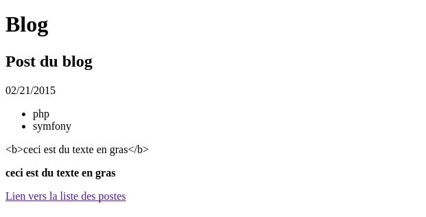

Les vues avec Twig¶
Symfony utilise le moteur de templating Twig pour aider au rendu des pages. Il présente plusieurs avantages :
- il compile les templates en code PHP optimisé
- il possède toutes les structures de contrôle classiques
- la syntaxe qu’il propose est compacte et souvent plus rapide à taper
- il propose nativement un grand nombre de méthodes et de filtres
- il propose un système avancé de blocs, macros et d’héritage qui permet de facilement factoriser le code
Voyons un exemple. Voici un exemple de code en PHP et son équivalent en Twig :
<ul id="navigation">
<?php foreach ($navigation as $item): ?>
<li>
<a href="<?php echo $item->getHref() ?>"><?php echo $item->getName() ?></a>
</li>
<?php endforeach; ?>
</ul>
<ul id="navigation">
{% for item in navigation %}
<li>
<a href="{{ item.href }}">{{ item.name }}</a>
</li>
{% endfor %}
</ul>
Le base¶
Retournons à l’origine de l’appel du template, c’est à dire dans le contrôleur et ajoutons quelques paramètres au template :
return $this->render('EpsiBlogBundle:Blog:show.html.twig', array(
'id' => $id,
'name' => 'Post du blog',
'date' => new \DateTime(),
'tags' => array( 'php', 'symfony' ),
'html' => '<b>ceci est du texte en gras</b>'
));
Ensuite enrichissons un peu le template d’affichage :
<!DOCTYPE html>
<html>
<head>
<title>Blog</title>
</head>
<body>
<h1>Blog</h1>
<h2>{{ name }}</h2>
<p>{{ date|date("m/d/Y") }}</p>
<ul>
{% for tag in tags %}
<li>{{ tag }}</li>
{% endfor %}
</ul>
<p>{{ html }}</p>
<p>{{ html|raw }}</p>
<a href="{{ path('epsi_blog_index') }}">Lien vers la liste des postes</a>
</body>
</html>
Voici le résultat :
La syntaxe est très simple :
- {{ ... }} affiche quelque chose ;
- {% ... %} fait quelque chose ;
- {# ... #} n’affiche rien et ne fait rien : c’est la syntaxe pour les commentaires, qui peuvent être sur plusieurs lignes ;
Accès aux variables¶
{# name = 'Jack' #}
{{ name }}
{# user = array( 'name' => 'Jack' ) #}
{{ user.name }}
{{ user['name'] }}
{# user = new User( 'Jack' ) #}
{{ user.name }}
{{ user.getName }}
{# pour forcer l'appel à une méthode #}
{{ user.name() }}
{{ user.getName() }}
{# passage d'argument à une méthode #}
{{ user.date('Y-m-d') }}
{# On peut aussi utiliser la fonction attribute #}
{{ attribute(object, method) }}
{{ attribute(object, method, arguments) }}
{{ attribute(array, item) }}
Affectation de variables¶
{% set foo = 'foo' %}
{% set foo = [1, 2] %}
{% set foo = {'foo': 'bar'} %}
Les filtres¶
Les variables peuvent être modifiées par des filtres. Les filtres sont séparés par des pipes (|) et peuvent avoir des paramètres supplémentaire entre parenthèses.
{{ name|striptags|title }}
{{ list|join(', ') }}
On peut également appliquer un filtre sur une portion de code :
{% filter upper %}
This text becomes uppercase
{% endfilter %}
Les fonctions¶
Les fonctions sont appelées pour générer du contenu. Elles sont appelées par leur nom suivi de paramètres entre parenthèses :
{% for i in range(0, 3) %}
{{ i }},
{% endfor %}
Les structures de contrôle¶
Les structures de contrôle sont des tags dans Twig.
Conditions¶
{% if user.isSuperAdmin() %}
...
{% elseif user.isMember() %}
...
{% else %}
...
{% endif %}
Boucle¶
{% for user in users if iser.isActive() %}
...
{% endfor %}
Inclusion de template¶
{% include 'header.html' with {'foo': 'bar'} %}
{% include 'body.html' only %}
{% include 'footer.html' with {'foo': 'bar'} only %}
Lors de l’inclusion de template, le template inclus a accès à toutes les variables du contexte courant sauf si on utilise le mot clé only. Le mot clé with permet quand à lui de passer des variables au template.
Héritage de template¶
L’héritage permet de créer un squelette définissant la structure générale des pages dans lequel on définit des blocs qui seront surchargés par les templates enfants.
Reprenons le template show.html.twig et copions le code dans le template src/Epsi/Bundle/BlogBundle/Resources/views/base.html.twig en remplaçant les parties spécifiques par des blocs et en l’enrichissant un peu :
<!DOCTYPE html>
<html>
<head>
<meta http-equic="Content-type" content="text/html; charset=utf-8" />
<title>{% block title %}{% endblock %} - Blog</title>
{% block stylesheets %}
{% endblock %}
</head>
<body>
<div class="container">
<div id="content">
{% block content %}
{% endblock %}
</div>
<footer>
{% block footer %}
© Copyright 2015
{% endblock %}
</footer>
</div>
{% block javascripts %}
{% endblock %}
</body>
</html>
Il faut maintenant modifier le template show.html.twig pour lui dire d’hériter du tempalte de base et remplir les blocs :
{% extends "EpsiBlogBundle::base.html.twig" %}
{% block title 'Blog' %}
{% block content %}
<h1>Blog</h1>
<h2>{{ name }}</h2>
<p>{{ date|date("m/d/Y") }}</p>
<ul>
{% for tag in tags %}
<li>{{ tag }}</li>
{% endfor %}
</ul>
<p>{{ html }}</p>
<p>{{ html|raw }}</p>
{% endblock %}
{% block footer %}
{{ parent() }}
- <a href="{{ path('epsi_blog_index') }}">Lien vers la liste des postes</a>
{% endblock %}
Twig propose beaucoup de filtres, méthodes et fonctions que vous pouvez retrouver sur la documentation officielle : http://twig.sensiolabs.org/
Les macros¶
Les macros sont similaires à des fonctions excepté qu’elles sont écrites directement en Twig :
{# dans le template où l'on veut utiliser la macro #}
{% import macro.html.twig as forms %}
<p>{{ forms.input('username') }}</p>
{# dans le template où l'on implémente les macros #}
{% macro input(name, value = "", type = "text", size = 20) %}
<input type="{{ type }}" name="{{ name }}" value="{{ value|e }}" size="{{ size }}" />
{% endmacro %}
Les types de variables¶
Les types de valeurs sont similaires aux types natifs de PHP excepté qu’il fait la différence entre les tableaux et les hashs (tableaux associatifs) :
- les chaînes de caractères "Hello world"
- les entiers 42
- les flottants 42.56
- les tableaux ["foo", "bar"]
- les hashs {"foo": "bar"} {'foo': 'foo', 'bar': 'bar'} {foo: 'foo', bar: 'bar'} {2: 'foo', 4: 'bar'}
- les booleans true et false
- le null null
Les opérateurs¶
- Mathématiques
- addition {{ 1 + 1 }} = 2
- soustraction {{ 3 - 2 }} = 1
- multiplication {{ 2 * 2 }} = 4
- division {{ 1 / 2 }} = 0.5
- division avec arrondi {{ 20 // 7 }} = 2
- modulo {{ 20 % 7 }} = 6
- puissance {{ 2 ** 3 }} = 8
- Logiques
- ET and (équivalent du && PHP)
- OU or (équivalent du || PHP)
- Négation not (équivalent du ! PHP)
- Binaires
- ET b-and (équivalent du & PHP)
- OU b-or (équivalent du | PHP)
- OU exclusif not (équivalent du ^ PHP)
- Comparaisons
égalité ==
différence !=
inférieur <
supérieur >
inférieur ou égal <=
supérieur ou égal >=
- pour les chaîne de caractères
- commence par starts
- finit par ends
- corresponds à matches (test avec une expression régulière)
- Test
- est égal à une constante is constant()
- est définit is defined
- est divisible par is divisible by()
- est vide is empty
- est un nombre pair is even
- est un nombre impair is odd
- est itérable is iterable
- est null is null
- est identique à is same as() (équivalent du === PHP)
- Autres opérateurs
crée un séquence .. (équivalent de la fonction range) 1..4 = [1, 2, 3, 4]
applique un filtre |
convertie les opérandes en chaînes de caractères et les concatènes ~. "Hello " ~ name ~ "!" = "Hello John!"
récupère un attribut d’un objet . ou []. user.name ou user['name']
- opérateur tertiaire ?: . {{ foo ? 'yes' : 'no' }}
- {{ foo ?: 'no' }} est équivalent à {{ foo ? foo : 'no' }}
- {{ foo ? 'yes' }} est équivalent à {{ foo ? 'yes' : '' }}
- Substitution de chaînes de caractères
- #{} dans un chaîne ouverte ace des double quote. "foo #{1 + 2} baz" = "foo 2 bar"
- Contrôle es espaces blancs
Supprime tous les espaces, tabulations et saut de lignes inutiles :
{% spaceless %}{% endspaceless %}
{# name = 'Jack' #} {{ name }} {# user = array( 'name' => 'Jack' ) #} {{ user.name }} {{ user['name'] }}
{%-, -%}, {{- et -}}
{# user = new User( 'Jack' ) #} {{ user.name }} {{ user.getName }}